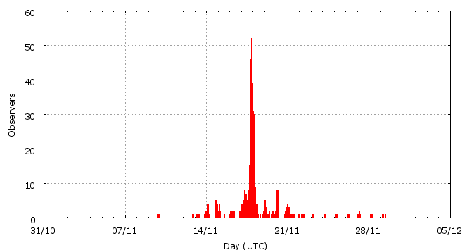

This page shows automated results of the Leonids 2009, based on visual observations by volunteers astronomers collected through the report form of the International Meteor Organization (IMO). The information on this page is generated fully automatically; for scientific use please refer to manual analyses published in scientific journals (such as WGN). Send your feedback regarding this page to Geert Barentsen.
Page contents:
 17-18 November in detail (NEW)
17-18 November in detail (NEW)Page generated: 2010 April 19 at 14:55 UTC.
The graph below shows the ZHR (Zenithal Hourly Rate), which is the number of meteors an observer would see under a very dark sky with the radiant of the shower in zenith.
ZHRmax = 79 based on 4419 Leonids reported in 1222 intervals, assuming population index r = 1.9

| Time (UTC) | Solarlon | nINT | nLEO | ZHR | Number density | |
|---|---|---|---|---|---|---|
| 2009-11-13 02:27 | 230.706 | 5 | 4 | 4 | ±2 | 2 / 109·km3 |
| 2009-11-14 02:16 | 231.705 | 12 | 32 | 5 | ±1 | 3 / 109·km3 |
| 2009-11-15 01:19 | 232.673 | 13 | 31 | 7 | ±1 | 4 / 109·km3 |
| 2009-11-15 23:54 | 233.621 | 9 | 20 | 6 | ±1 | 4 / 109·km3 |
| 2009-11-16 20:28 | 234.484 | 41 | 50 | 16 | ±2 | 10 / 109·km3 |
| 2009-11-17 03:33 | 234.782 | 23 | 66 | 21 | ±3 | 13 / 109·km3 |
| 2009-11-17 06:26 | 234.903 | 38 | 67 | 28 | ±3 | 17 / 109·km3 |
| 2009-11-17 08:32 | 234.991 | 24 | 66 | 29 | ±4 | 18 / 109·km3 |
| 2009-11-17 09:38 | 235.037 | 19 | 65 | 30 | ±4 | 18 / 109·km3 |
| 2009-11-17 10:32 | 235.075 | 15 | 70 | 32 | ±4 | 19 / 109·km3 |
| 2009-11-17 11:39 | 235.123 | 20 | 65 | 26 | ±3 | 16 / 109·km3 |
| 2009-11-17 16:01 | 235.306 | 24 | 67 | 31 | ±4 | 19 / 109·km3 |
| 2009-11-17 17:42 | 235.377 | 23 | 69 | 42 | ±5 | 25 / 109·km3 |
| 2009-11-17 18:23 | 235.405 | 18 | 65 | 41 | ±5 | 25 / 109·km3 |
| 2009-11-17 19:00 | 235.431 | 21 | 102 | 58 | ±6 | 35 / 109·km3 |
| 2009-11-17 19:28 | 235.451 | 28 | 127 | 59 | ±5 | 36 / 109·km3 |
| 2009-11-17 19:59 | 235.473 | 43 | 191 | 74 | ±5 | 45 / 109·km3 |
| 2009-11-17 20:27 | 235.492 | 59 | 265 | 79 | ±5 | 48 / 109·km3 |
| 2009-11-17 20:57 | 235.514 | 51 | 192 | 69 | ±5 | 42 / 109·km3 |
| 2009-11-17 21:27 | 235.535 | 53 | 281 | 68 | ±4 | 41 / 109·km3 |
| 2009-11-17 21:58 | 235.556 | 44 | 118 | 40 | ±4 | 24 / 109·km3 |
| 2009-11-17 22:28 | 235.577 | 49 | 121 | 36 | ±3 | 22 / 109·km3 |
| 2009-11-17 22:57 | 235.597 | 49 | 221 | 52 | ±3 | 31 / 109·km3 |
| 2009-11-17 23:29 | 235.620 | 42 | 177 | 37 | ±3 | 22 / 109·km3 |
| 2009-11-17 23:58 | 235.640 | 39 | 137 | 36 | ±3 | 22 / 109·km3 |
| 2009-11-18 00:29 | 235.662 | 35 | 153 | 40 | ±3 | 24 / 109·km3 |
| 2009-11-18 00:58 | 235.682 | 35 | 152 | 41 | ±3 | 25 / 109·km3 |
| 2009-11-18 01:28 | 235.704 | 45 | 195 | 33 | ±2 | 20 / 109·km3 |
| 2009-11-18 01:58 | 235.724 | 41 | 182 | 33 | ±2 | 20 / 109·km3 |
| 2009-11-18 02:27 | 235.744 | 36 | 169 | 33 | ±3 | 20 / 109·km3 |
| 2009-11-18 02:58 | 235.766 | 31 | 129 | 28 | ±2 | 17 / 109·km3 |
| 2009-11-18 03:29 | 235.788 | 25 | 97 | 29 | ±3 | 18 / 109·km3 |
| 2009-11-18 03:58 | 235.809 | 27 | 103 | 29 | ±3 | 18 / 109·km3 |
| 2009-11-18 04:35 | 235.834 | 21 | 65 | 24 | ±3 | 15 / 109·km3 |
| 2009-11-18 05:29 | 235.872 | 13 | 68 | 30 | ±4 | 18 / 109·km3 |
| 2009-11-18 09:04 | 236.022 | 24 | 65 | 19 | ±2 | 12 / 109·km3 |
| 2009-11-18 20:35 | 236.507 | 32 | 66 | 12 | ±1 | 7 / 109·km3 |
| 2009-11-19 07:54 | 236.983 | 15 | 55 | 11 | ±1 | 7 / 109·km3 |
| 2009-11-20 02:12 | 237.753 | 26 | 65 | 6 | ±1 | 4 / 109·km3 |
| 2009-11-20 06:43 | 237.942 | 8 | 34 | 9 | ±2 | 5 / 109·km3 |
| 2009-11-21 02:23 | 238.770 | 20 | 69 | 8 | ±1 | 5 / 109·km3 |
| 2009-11-22 01:56 | 239.761 | 6 | 15 | 5 | ±1 | 3 / 109·km3 |
| 2009-11-22 09:30 | 240.079 | 2 | 2 | 3 | ±2 | 2 / 109·km3 |
| 2009-11-23 04:44 | 240.890 | 2 | 10 | 6 | ±2 | 4 / 109·km3 |
| 2009-11-24 05:00 | 241.911 | 2 | 13 | 6 | ±2 | 4 / 109·km3 |
| 2009-11-25 05:05 | 242.926 | 2 | 9 | 4 | ±1 | 2 / 109·km3 |
| 2009-11-26 05:06 | 243.938 | 2 | 12 | 5 | ±1 | 3 / 109·km3 |
| 2009-11-27 03:52 | 244.898 | 4 | 6 | 2 | ±1 | 1 / 109·km3 |
| 2009-11-28 05:13 | 245.967 | 2 | 10 | 5 | ±2 | 3 / 109·km3 |
| 2009-11-29 07:53 | 247.092 | 4 | 6 | 3 | ±1 | 2 / 109·km3 |
The reported intervals are automatically added together into the bins shown above, based on the number of meteors and the distribution of the intervals. For each bin, the following parameters are computed:

| Time (UTC) | Solarlon | nINT | nLEO | ZHR | Number density | |
|---|---|---|---|---|---|---|
| 2009-11-17 05:20 | 234.857 | 32 | 47 | 22 | ±3 | 13 / 109·km3 |
| 2009-11-17 07:13 | 234.937 | 18 | 48 | 37 | ±5 | 22 / 109·km3 |
| 2009-11-17 08:24 | 234.986 | 20 | 53 | 29 | ±4 | 18 / 109·km3 |
| 2009-11-17 09:16 | 235.022 | 14 | 45 | 30 | ±4 | 18 / 109·km3 |
| 2009-11-17 09:56 | 235.050 | 13 | 49 | 30 | ±4 | 18 / 109·km3 |
| 2009-11-17 10:30 | 235.074 | 8 | 47 | 32 | ±5 | 19 / 109·km3 |
| 2009-11-17 11:04 | 235.098 | 14 | 49 | 29 | ±4 | 18 / 109·km3 |
| 2009-11-17 12:26 | 235.156 | 16 | 51 | 21 | ±3 | 13 / 109·km3 |
| 2009-11-17 16:29 | 235.326 | 19 | 47 | 38 | ±5 | 23 / 109·km3 |
| 2009-11-17 17:29 | 235.368 | 16 | 46 | 46 | ±7 | 28 / 109·km3 |
| 2009-11-17 17:58 | 235.388 | 14 | 46 | 48 | ±7 | 29 / 109·km3 |
| 2009-11-17 18:22 | 235.405 | 15 | 46 | 45 | ±7 | 27 / 109·km3 |
| 2009-11-17 18:48 | 235.423 | 9 | 46 | 48 | ±7 | 29 / 109·km3 |
| 2009-11-17 19:03 | 235.434 | 16 | 84 | 65 | ±7 | 39 / 109·km3 |
| 2009-11-17 19:19 | 235.445 | 17 | 72 | 61 | ±7 | 37 / 109·km3 |
| 2009-11-17 19:35 | 235.456 | 11 | 55 | 56 | ±7 | 34 / 109·km3 |
| 2009-11-17 19:49 | 235.465 | 20 | 81 | 74 | ±8 | 45 / 109·km3 |
| 2009-11-17 20:04 | 235.477 | 22 | 105 | 72 | ±7 | 44 / 109·km3 |
| 2009-11-17 20:19 | 235.487 | 36 | 186 | 89 | ±7 | 54 / 109·km3 |
| 2009-11-17 20:34 | 235.497 | 26 | 81 | 66 | ±7 | 40 / 109·km3 |
| 2009-11-17 20:48 | 235.507 | 33 | 132 | 62 | ±5 | 38 / 109·km3 |
| 2009-11-17 21:04 | 235.518 | 25 | 89 | 80 | ±8 | 48 / 109·km3 |
| 2009-11-17 21:19 | 235.529 | 29 | 124 | 68 | ±6 | 41 / 109·km3 |
| 2009-11-17 21:34 | 235.539 | 27 | 184 | 72 | ±5 | 44 / 109·km3 |
| 2009-11-17 21:49 | 235.550 | 23 | 64 | 42 | ±5 | 25 / 109·km3 |
| 2009-11-17 22:05 | 235.561 | 22 | 54 | 39 | ±5 | 24 / 109·km3 |
| 2009-11-17 22:20 | 235.571 | 26 | 71 | 38 | ±4 | 23 / 109·km3 |
| 2009-11-17 22:35 | 235.582 | 23 | 56 | 38 | ±5 | 23 / 109·km3 |
| 2009-11-17 22:48 | 235.591 | 30 | 165 | 57 | ±4 | 35 / 109·km3 |
| 2009-11-17 23:05 | 235.603 | 20 | 57 | 49 | ±6 | 30 / 109·km3 |
| 2009-11-17 23:18 | 235.612 | 21 | 80 | 36 | ±4 | 22 / 109·km3 |
| 2009-11-17 23:34 | 235.623 | 22 | 105 | 45 | ±4 | 27 / 109·km3 |
| 2009-11-17 23:48 | 235.633 | 20 | 66 | 32 | ±4 | 19 / 109·km3 |
| 2009-11-18 00:04 | 235.644 | 22 | 82 | 36 | ±4 | 22 / 109·km3 |
| 2009-11-18 00:19 | 235.655 | 18 | 81 | 38 | ±4 | 23 / 109·km3 |
| 2009-11-18 00:36 | 235.667 | 18 | 71 | 42 | ±5 | 25 / 109·km3 |
| 2009-11-18 00:50 | 235.677 | 19 | 94 | 51 | ±5 | 31 / 109·km3 |
| 2009-11-18 01:06 | 235.688 | 17 | 60 | 32 | ±4 | 19 / 109·km3 |
| 2009-11-18 01:21 | 235.698 | 21 | 83 | 36 | ±4 | 22 / 109·km3 |
| 2009-11-18 01:35 | 235.708 | 24 | 112 | 32 | ±3 | 19 / 109·km3 |
| 2009-11-18 01:51 | 235.719 | 23 | 104 | 36 | ±4 | 22 / 109·km3 |
| 2009-11-18 02:09 | 235.732 | 25 | 125 | 32 | ±3 | 19 / 109·km3 |
| 2009-11-18 02:23 | 235.742 | 15 | 63 | 32 | ±4 | 19 / 109·km3 |
| 2009-11-18 02:39 | 235.753 | 20 | 104 | 35 | ±3 | 21 / 109·km3 |
| 2009-11-18 02:55 | 235.764 | 14 | 46 | 27 | ±4 | 16 / 109·km3 |
| 2009-11-18 03:11 | 235.775 | 16 | 55 | 22 | ±3 | 13 / 109·km3 |
| 2009-11-18 03:27 | 235.786 | 13 | 52 | 30 | ±4 | 18 / 109·km3 |
| 2009-11-18 03:43 | 235.798 | 14 | 54 | 30 | ±4 | 18 / 109·km3 |
| 2009-11-18 03:58 | 235.808 | 15 | 61 | 29 | ±4 | 18 / 109·km3 |
| 2009-11-18 04:19 | 235.823 | 16 | 47 | 23 | ±3 | 14 / 109·km3 |
| 2009-11-18 04:47 | 235.843 | 13 | 48 | 30 | ±4 | 18 / 109·km3 |
| 2009-11-18 05:13 | 235.861 | 8 | 45 | 28 | ±4 | 17 / 109·km3 |
| 2009-11-18 07:39 | 235.963 | 13 | 49 | 26 | ±4 | 16 / 109·km3 |
| 2009-11-18 09:53 | 236.057 | 20 | 46 | 16 | ±2 | 10 / 109·km3 |
| 2009-11-18 11:20 | 236.118 | 4 | 11 | 17 | ±5 | 10 / 109·km3 |
Data has been received from 121 observers in 26 countries. Thank you for your efforts!
Note: click on the map for an interactive version.

| Observer | Country | Teff | nLEO |
|---|---|---|---|
| Salvador Aguirre | Mexico | 7.20h | 85 |
| Seishi Akagi | Japan | 4.09h | 127 |
| Plamena Alexandrova | Bulgaria | 3.72h | 46 |
| Ahmad Alhudban | Jordan | 2.00h | 46 |
| Alexandre Amorim | Brazil | 3.60h | 4 |
| Rainer Arlt | Germany | 2.07h | 35 |
| Pierre Bader | Germany | 5.60h | 34 |
| Ivana Belic | Serbia | 3.32h | 41 |
| Jens Briesemeister | Germany | 4.42h | 100 |
| Gennadij Bugarevych | Belarus | 4.23h | 35 |
| Simiao Cheng | China | 2.57h | 53 |
| Tom Corstjens | Belgium | 1.61h | 8 |
| Luigi D'argliano | Italy | 1.38h | 8 |
| Mark Davis | United States | 3.17h | 27 |
| Mayuresh Desai | India | 11.09h | 134 |
| Sietse Dijkstra | Netherlands | 8.84h | 38 |
| Todor Dimitrov | Bulgaria | 2.66h | 62 |
| Aleksandra Djukic | Serbia | 3.76h | 19 |
| Plamena Enikova | Bulgaria | 2.37h | 28 |
| Tomasz Fajfer | Poland | 3.00h | 3 |
| Stela Frencheva | Bulgaria | 2.15h | 38 |
| Christoph Gerber | Germany | 2.35h | 12 |
| Wei Ge | China | 2.66h | 60 |
| Ashwini Ghadigaonkar | India | 3.31h | 10 |
| William Godley | United States | 1.00h | 3 |
| Evgeny Gorbikov | Israel | 3.10h | 47 |
| Shomita Goswami | India | 1.00h | 18 |
| Daniel Gruen | Germany | 0.80h | 1 |
| Shy Halatzi | Israel | 4.04h | 89 |
| Wayne T. Hally | United States | 9.58h | 34 |
| Vilem Heblik | Czech Republic | 8.73h | 64 |
| Jingjing He | China | 1.26h | 77 |
| Carl Hergenrother | United States | 3.03h | 38 |
| Gabriel Hickel | Brazil | 1.14h | 18 |
| Ken Hodonsky | United States | 6.22h | 53 |
| Kamil Hornoch | Czech Republic | 5.10h | 97 |
| David Hostetter | United States | 1.50h | 5 |
| Shan Huang | China | 1.33h | 35 |
| Carl Johannink | Netherlands | 1.50h | 1 |
| Bhargav Joshi | India | 0.70h | 23 |
| Javor Kac | Slovenia | 7.75h | 62 |
| Amiraly Kandymov | Ukraine | 5.42h | 11 |
| Yann Kempf | France | 1.38h | 1 |
| Akshay Khanchane | India | 2.36h | 15 |
| Vaishali Kharat | India | 1.84h | 20 |
| Gyula Kiss | Hungary | 7.00h | 25 |
| Katja Koleva | Bulgaria | 5.23h | 77 |
| Jakub Koukal | Czech Republic | 24.70h | 120 |
| Kenta Kouno | Japan | 3.34h | 94 |
| Sneha Kulkarni | India | 1.92h | 37 |
| Jens Lacorne | France | 2.18h | 7 |
| Peter Van Leuteren | Netherlands | 4.09h | 16 |
| Anna S. Levina | Israel | 8.39h | 114 |
| Mike Linnolt | United States | 3.04h | 39 |
| Yanzhe Liu | United States | 0.50h | 1 |
| Xin Li | China | 0.58h | 16 |
| Yunpeng Li | China | 1.27h | 22 |
| Darshan Lohade | Laos | 2.08h | 19 |
| Douglas Love | United States | 0.83h | 17 |
| Jose Luis Maestre Garcia | Spain | 1.20h | 3 |
| Kouji Maeda | Japan | 1.25h | 26 |
| Vimal Mamania | India | 4.50h | 40 |
| Qiang Ma | China | 1.33h | 59 |
| Adam Marsh | Australia | 2.00h | 20 |
| Grigoris Maravelias | Greece | 6.93h | 132 |
| Pierre Martin | Canada | 4.85h | 100 |
| Mikhail Maslov | Russia | 1.81h | 4 |
| Xiaoyun Ma | China | 1.50h | 42 |
| Vasilis Metallinos | Greece | 2.66h | 72 |
| Koen Miskotte | Netherlands | 6.95h | 12 |
| Abbas Mokhtarzadeh | Canada | 1.00h | 6 |
| Vikrant Narang | India | 2.97h | 78 |
| Sven Nather | Germany | 16.80h | 73 |
| Mohammad Odeh | Jordan | 3.73h | 66 |
| Amitabh Pandey | India | 1.00h | 4 |
| Swapnil Pawar | India | 2.82h | 18 |
| Krzysztof Polakowski | Poland | 3.00h | 1 |
| Mayuresh G. Prabhune | India | 1.60h | 33 |
| Nilesh Puntambekar | India | 1.00h | 3 |
| Ella Ratz | Israel | 1.96h | 29 |
| Jatin Rathod | India | 1.80h | 24 |
| Jurgen Rendtel | Germany | 32.72h | 150 |
| Mikiya Sato | Japan | 0.50h | 25 |
| Branislav Savic | Serbia | 3.90h | 46 |
| Alex Scholten | unknown | 1.90h | 3 |
| Rene Scurbecq | Belgium | 0.65h | 3 |
| Hideki Seo | Japan | 0.50h | 14 |
| Rohan Shewale | India | 6.41h | 96 |
| Magdalena Sieniawska | Poland | 3.00h | 1 |
| Costantino Sigismondi | Italy | 0.75h | 9 |
| Vladimir Sliusarenko | Ukraine | 5.08h | 94 |
| Sergey Stariy | Ukraine | 0.87h | 3 |
| Wesley Stone | United States | 2.25h | 36 |
| Richard Taibi | United States | 5.61h | 23 |
| Khaled Tell | Jordan | 2.75h | 53 |
| Kazumi Terakubo | Japan | 1.00h | 27 |
| Rushikesh Tilak | India | 1.17h | 12 |
| Rafael Ruben Torregrosa Soler | Spain | 0.55h | 2 |
| Josep Trigo Rodriguez | Spain | 0.98h | 22 |
| Pawel Trybus | Poland | 1.00h | 1 |
| Shigeo Uchiyama | Japan | 3.77h | 19 |
| Devdatta Urankar | India | 2.72h | 13 |
| Gayatri Urankar | India | 3.84h | 28 |
| Daniela Urumova | Bulgaria | 3.06h | 62 |
| Hendrik Vandenbruaene | Belgium | 2.29h | 14 |
| Michel Vandeputte | Belgium | 13.37h | 101 |
| Kaustubh Vaste | India | 1.28h | 15 |
| Valentin Velkov | Bulgaria | 1.03h | 23 |
| Daniel Verde | Spain | 1.00h | 7 |
| Daniel Verde Van Ouytsel | Spain | 3.04h | 42 |
| Yuechao Wang | China | 3.01h | 73 |
| William Watson | United States | 10.23h | 57 |
| Thomas Weiland | Austria | 3.60h | 68 |
| Xiaofan Wei | China | 2.10h | 33 |
| Wu Xijun | China | 1.34h | 24 |
| Jiaqing Yang | China | 3.20h | 94 |
| Quanzhi Ye | China | 2.69h | 62 |
| Weizhou Zeng | China | 2.03h | 65 |
| Cong Zhao | China | 1.10h | 4 |
| Nianfeng Zhang | China | 0.85h | 26 |
| Xiang Zhan | China | 0.70h | 35 |
| Hao Zhou | China | 0.93h | 46 |
| Dantong Zhu | China | 2.72h | 57 |
| Przemyslaw Zoladek | Poland | 3.00h | 1 |
Create your own analysis. The files below can be opened using Excel:
leo2009_rate.csv (number of meteors per interval per observer)
leo2009_magn.csv (number of meteors per magnitude bin per observer)
The information on this page may be distributed freely provided credit is given to the International Meteor Organization (IMO) and, when possible, to the individual observers. The computer facilities to generate this page are provided by the Urania Public Observatory in Belgium and Armagh Observatory in Northern Ireland.
References: